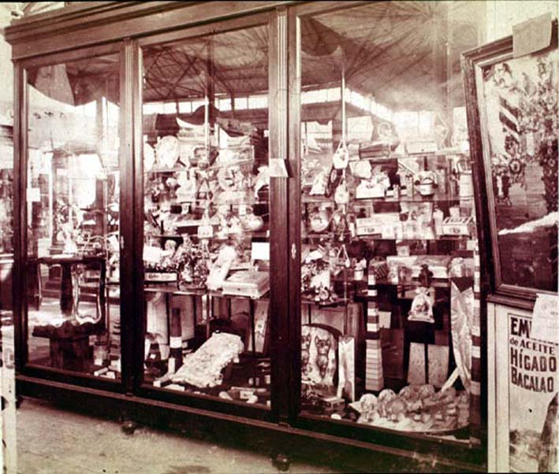

|
|  |
|
Vitrinas de la Exposición Industrial Argentina, 1882
|
It was only in 1922, on occasion of the centenary of Brazilian independence, that the first universal exhibition on South American soil was held at Rio de Janeiro. Previously attempts had been made to mount a world´s fair at Buenos Aires, which eventually became the Continental Exhibition of 1882. The exhibition embodied Argentina´s claim to hemispherial predominance after the end of the frontier wars and the consolidation of the central state in 1880, as the continent´s prime commercial outlet and bastion of taste and civilisation. (See, on the Continental Exhibition, the source documents included in the 'Historical Pieces' and 'Facsimils' section)
|